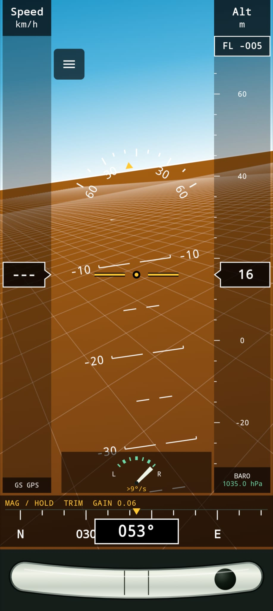
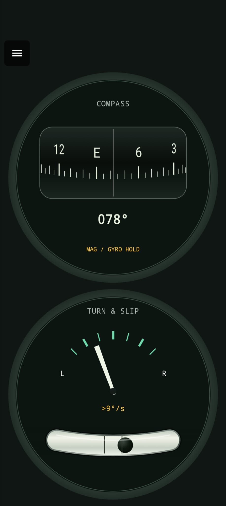

01 / Attitude
Bank, pitch & mounting
A full-screen horizon with ground calibration, selectable orientation, pitch trim, a magnetic or relative heading bar, and slip indication.
Mounting and calibrationAndroid / XCSoar connected
Your phone's sensors.
A connection to XCSoar.
GlideHorizon began with a simple goal: create an app that could feed XCSoar with gyro-based attitude data from a phone. It brings that idea together with an on-device horizon and a dedicated turn-and-slip view, using your Android phone's gyroscope and accelerometer to estimate bank and pitch.
Android 8.0+ Downloads & release availability

Inside GlideHorizon
A horizon, a dedicated turn-and-slip view, and an optional attitude feed to XCSoar. Features described in the November 2026 user manual; availability may vary by build.
01 / Attitude
A full-screen horizon with ground calibration, selectable orientation, pitch trim, a magnetic or relative heading bar, and slip indication.
Mounting and calibration02 / Connection
Send bank and pitch through local UDP, trusted-LAN Wi-Fi UDP or paired Bluetooth Classic SPP using the GDL90 ForeFlight AHRS extension.
Connection options03 / Observation
GPS ground speed, pressure or GPS altitude, a reference grid, and explicit local sensor recording and export. Replay is not implemented.
Display controls · Recording
Turn & slip
A dedicated turn-and-slip page combines a gyro-derived turn-rate needle, a damped slip ball and a magnetic compass, leaving the horizon and tapes on their own page.
The turn-rate calculation shares the attitude estimate and its limitations; the compass is not an independent backup. ATTITUDE HELD or DISPLAY HELD marks old measurements retained for up to five seconds, not live readings. Understand held and degraded displays.
Know what you are looking at
Accelerometers cannot distinguish gravity from sustained vehicle acceleration. Coordinated turns can corrupt the attitude estimate even when sensor health appears normal.
GPS speed is not airspeed. The grid is not terrain. Another app on the same phone does not add independent hardware or power.
Read the operational limitationsAn independent project
GlideHorizon is developed by Ulf Backudd. The application is free to use under a proprietary license, not open source. See downloads and release availability for the current published build.